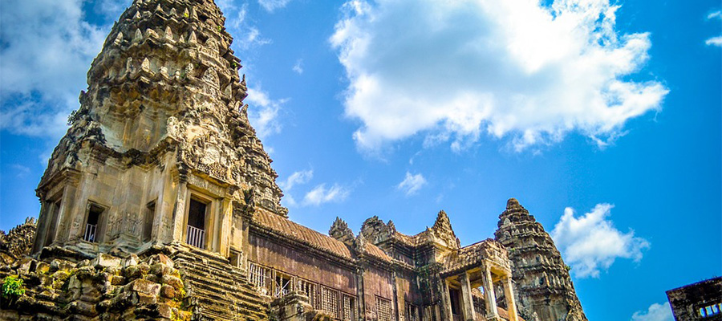
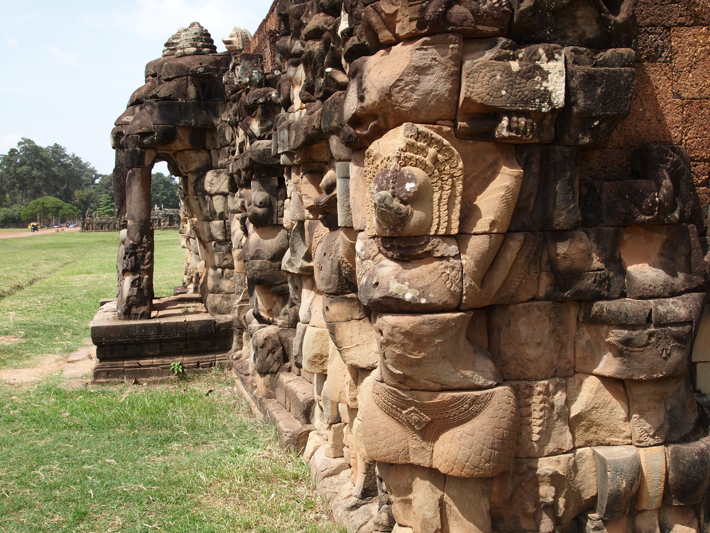
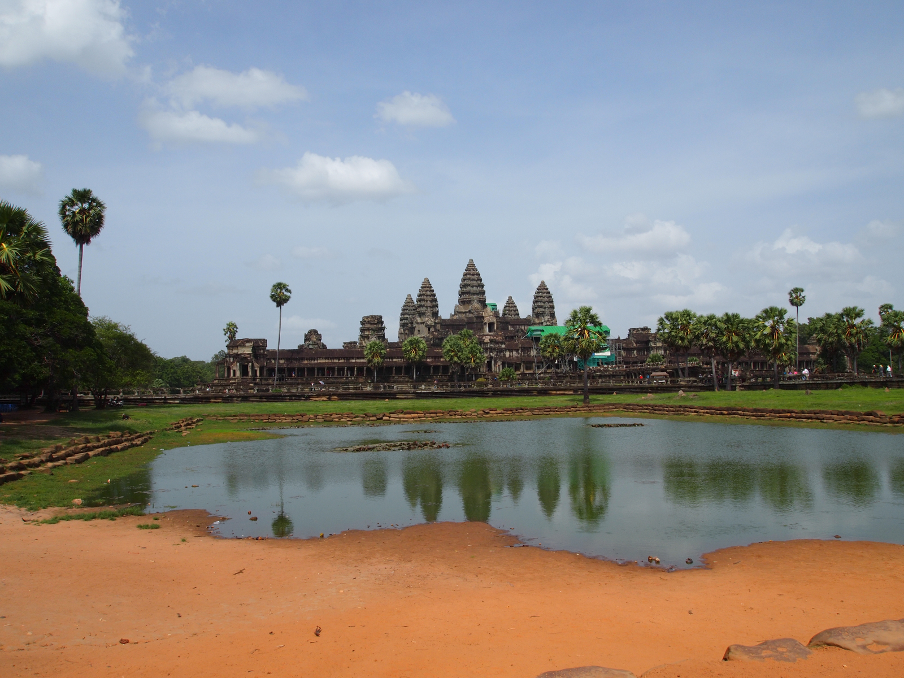
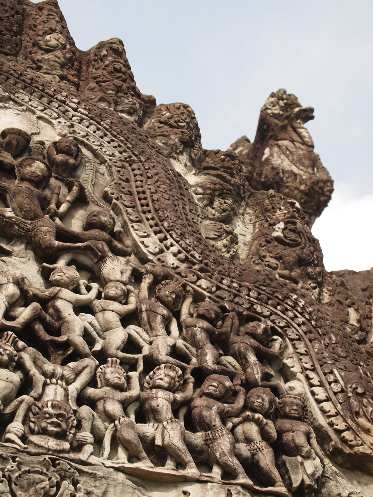
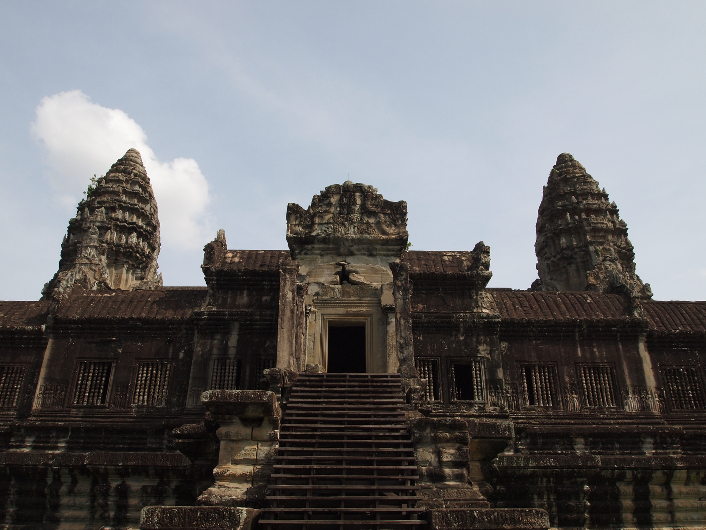
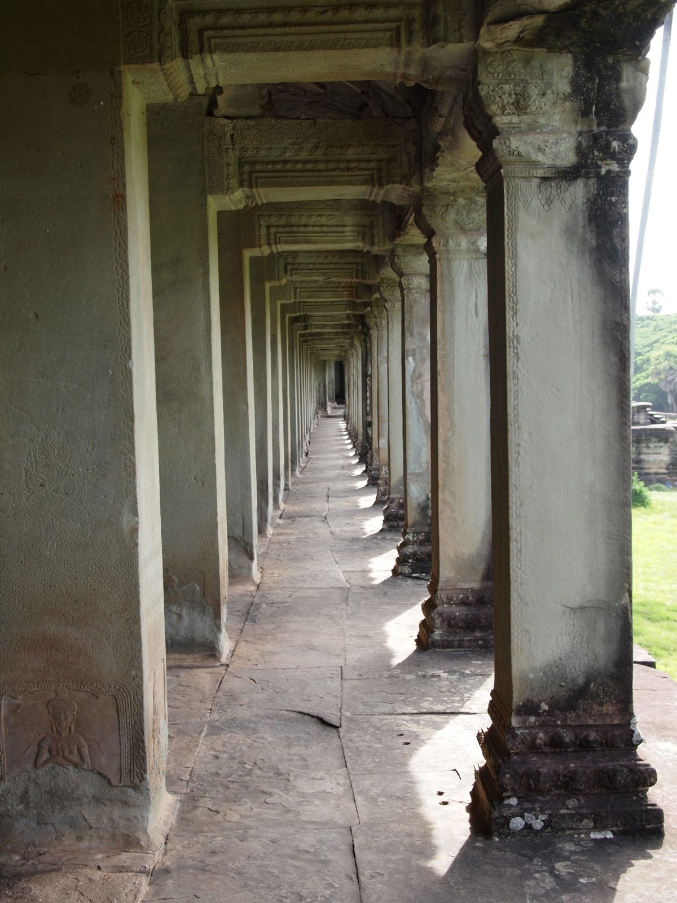
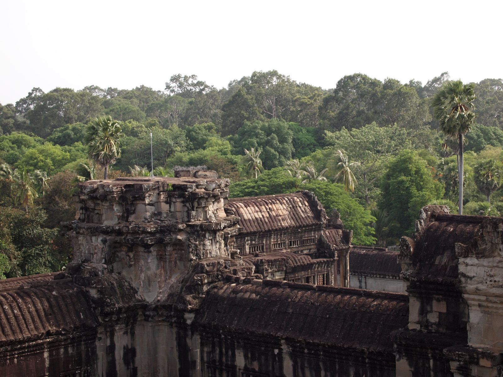

行こうぜ！アンコールワット！
■アンコールワットのご紹介
タイトル

カンボジア北西部に位置するユネスコの世界遺産（文化遺産）であるアンコール遺跡の一つであり、その遺跡群を代表するヒンドゥー教寺院建築。
タイトル
サンスクリット語でアンコールは王都、クメール語でワットは寺院を意味します。
タイトル
大伽藍と美しい彫刻を特徴としクメール建築の傑作とされ、カンボジア国旗の中央にも同国の象徴として描かれています。
■歴史・記事
タイトル
「アンコールワット」は「都市の寺」を意味する寺院。
カンボジアのシェムリアップ郊外にある「アンコール遺跡群」を代表する寺院です。
タイトル

「アンコールワットは12世紀前半、アンコール王朝のスーリヤヴァルマン2世によってヒンドゥー教寺院として建立されました。
東西1500m、南北1300mに渡るこの広大な寺院は当時、3万人もの労働者を動員し約30年の歳月をかけて造られたと言われています。
タイトル

「1431年頃に都がプノンペンに遷ると、一時アンコールは忘れ去られた存在となります。
再発見後は、未完成であった第一回廊北面とその付近に彫刻が施され、のちに寺院は仏教寺院へと改修されました。
タイトル

「世界中から耳目を集めるようになったのは1860年。
この寺院を訪れたフランス人のアンリ・ムーオがジャングルにひっそり佇んでいたこの建築の芸術性の高さを世界に発表したのです。
タイトル

「アンコールワットの見所はなんといっても、回廊に施された緻密なレリーフ。
ヒンドゥー教の叙事詩が表現されているその彫刻は躍動感に溢れ、ひとつひとつに表情や
動きがあり、これが全て人の手による創造だとは信じ難いほどです。
タイトル

「この地域一帯は1970年代からはじまった内戦でゲリラ戦が繰り広げられ、多くの地雷が埋められました。また、寺院内の奉納仏もその多くが首を撥ねられてしまいました。
美しい建築の中に、今も歴史の生々しい傷跡を見ることができます。
■カンボジアについて
| 国名 | カンボジア王国 |
|---|---|
| 面積 | 18.1万平方km（日本の約半分） |
| 人口 | 約1,300万人 |
| 首都 | プノンペン |
| 民族 | クメール人 |
| 言語 | 公用語としてクメール語ですが、ホテルやレストランなどは英語も一部可 |
| 宗教 | 仏教 |
| 通貨 | 通貨単位 リエル（Riel）、1US＄約4000リエル、 4000リエル約116円 |
| 気候 | 大きく乾期（涼季11月上旬～1月下旬）（暑季2月上旬～5月中旬）と雨期（5月下旬から10月の下旬）の2つの季節。 |
■アンコールワットへのアクセス
東京都—カンボジア シエムリアップ 乗り継ぎ便 (1 か所以上の経由地)
8 時間 45 分以上 往復料金 ￥47,521～